Чотири темні силові апки
Критерій відбору: силові тренування, темна тема, напрям «преміальна · мотивуюча · атлетична · сильна типографіка й дані».
Ladder
ОсноваЧорний фон і один лаймовий акцент. Жирний широкий гротеск капсом. Тренер присутній у кожному тренуванні, таблиця підходів у bottom sheet.
Gymshark Training
Графіки рекордівТемні картки «Squat (PB)» із великою цифрою, лінією і тултіпом дати.
WHOOP
Логер · цифраМінімальний логер «Reps / Weight» і кільце з однією цифрою ≈96 px.
Garmin Connect
Щільність · рекордиСписок рекордів, дворядкові рядки, кольорова смуга типу кроку.
Логування підходу
Вага, повтори, підходи. Тут закривається J4: атлет логує між підходами за секунди.
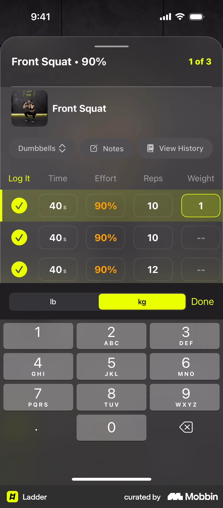
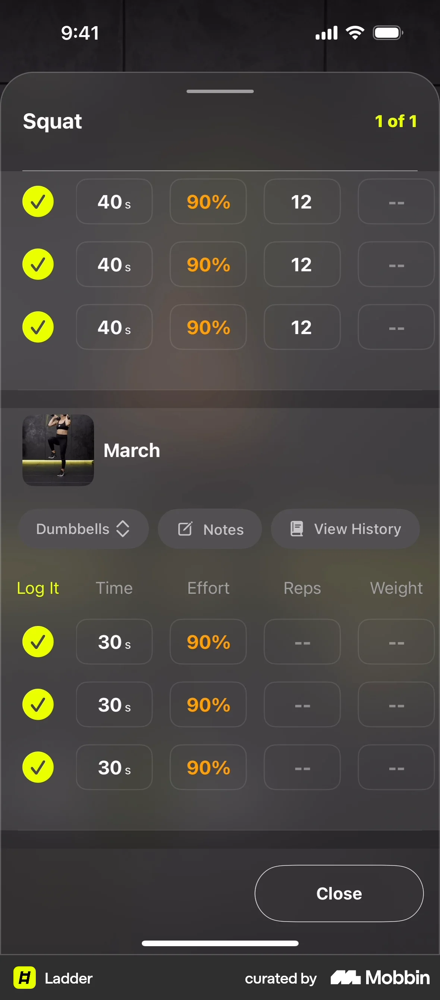
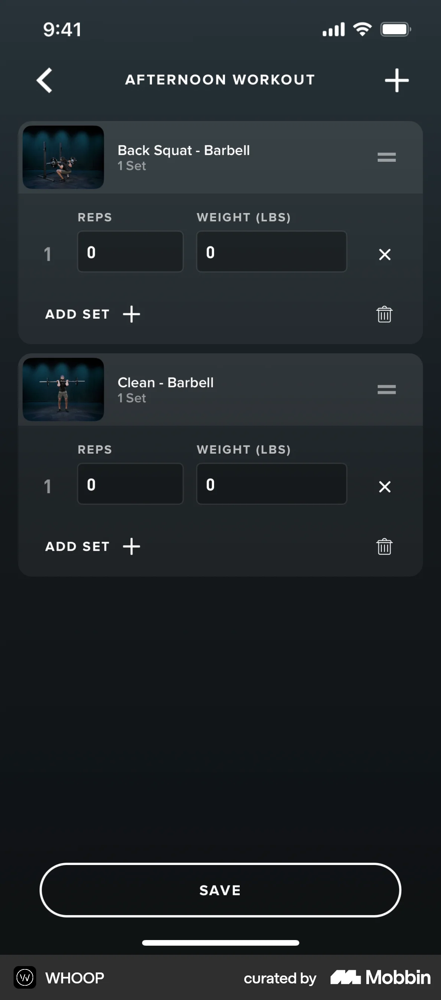
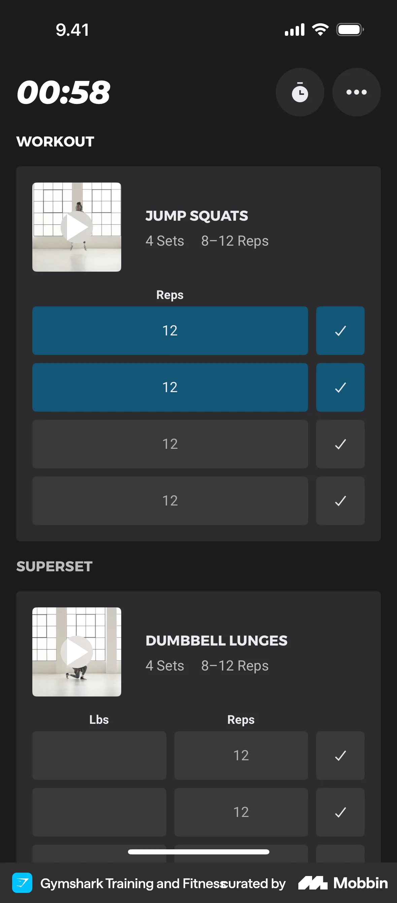
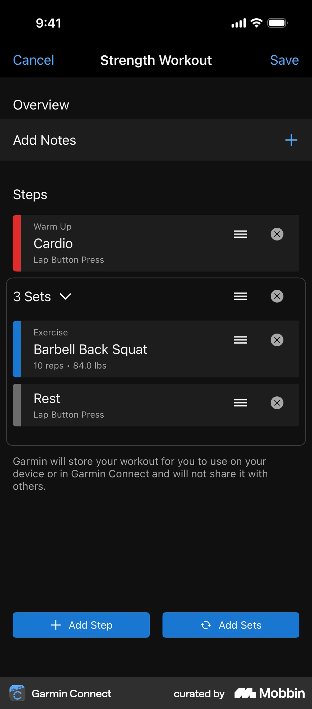
Графік прогресу
Вага тіла й силові показники. Дані мають читатися за секунду, а не як клітинки таблиці.
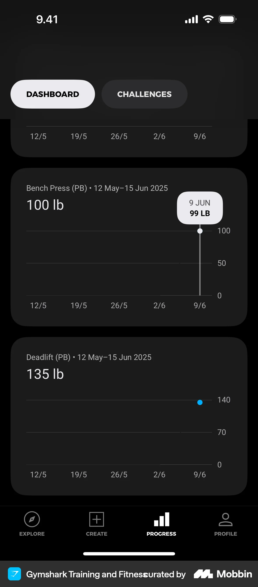
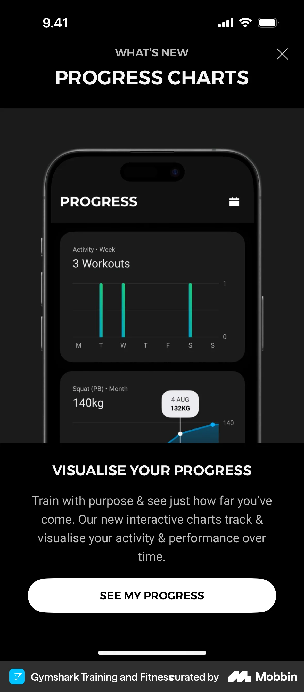
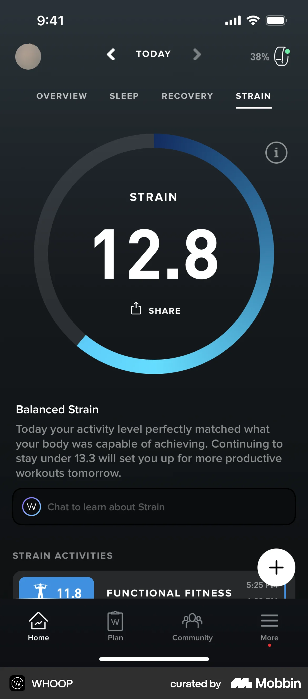
Рекорд і досягнення
Рекорд має одразу казати, що і на скільки. Саме на це скаржаться тренери Trainerize: «personal best — Great but WHAT?».
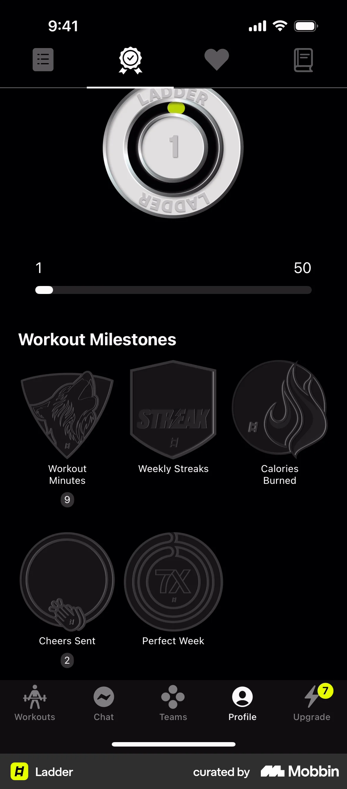
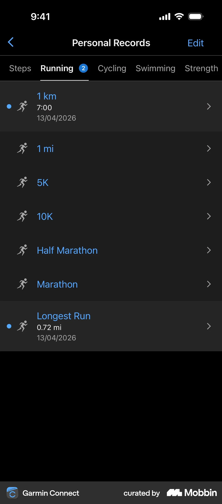
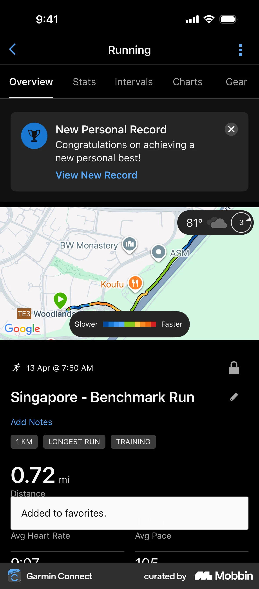
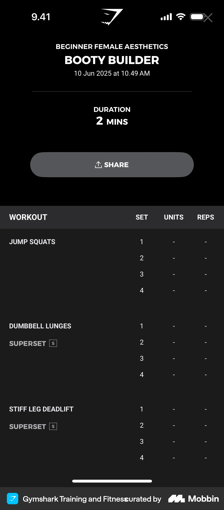
Список атлетів тренера
iOS + web. Тренер має бачити, хто відстає, не відкриваючи кожного атлета.
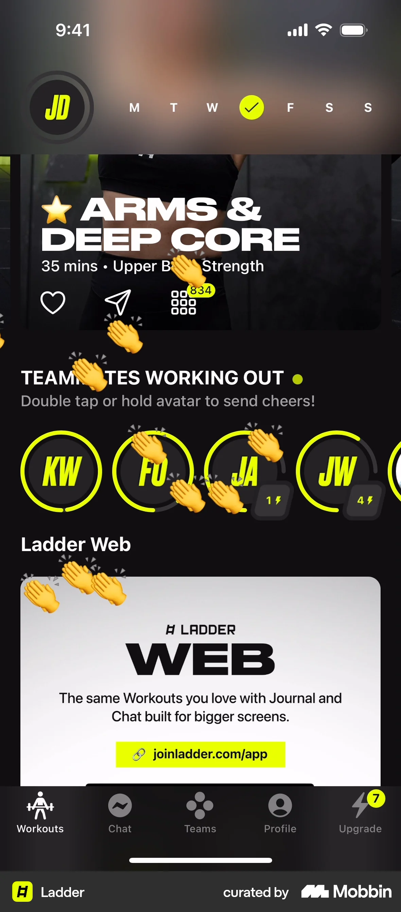
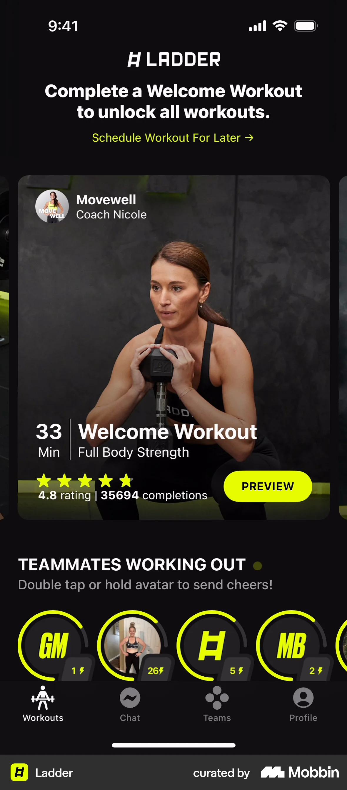
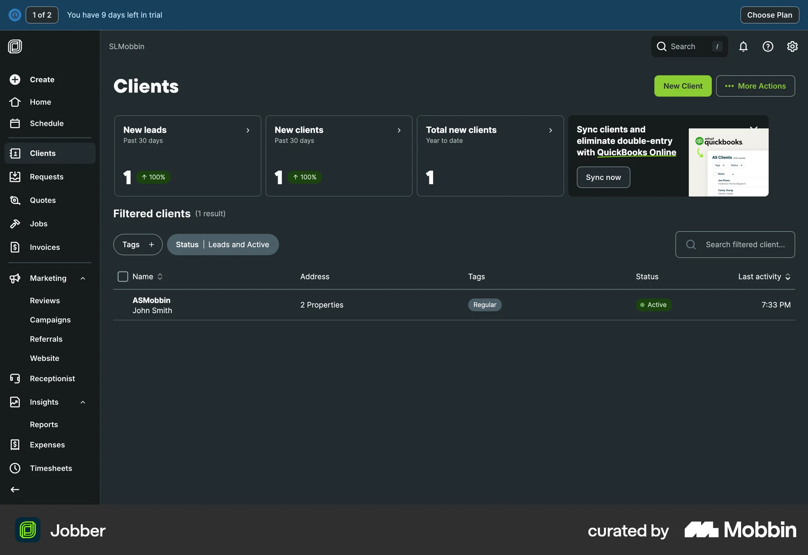
[?] Прогалина: темного тренерського кабінету силової апки в Mobbin немає (Trainerize і TrueCoach відсутні). Web-референс узято з Jobber.
Що беремо і навіщо
Основа Ladder: чорний фон, один акцент лише на стані, жирний гротеск капсом, тренер на картці. Не беремо емодзі-реакції, стіну селфі й фото-фони під кожним екраном.
Смуга + галочка на зробленому підході; «1 of 3» акцентом
Колонки Підхід · План · Вага · Повтори · ✓; рядок ≈48 px; угорі «Підхід 2 з 4».
Чи не загубився я посеред тренування
: зроблене й поточне видно кольором.
Лише два поля і одна кнопка
Активний підхід: вага й повтори, передзаповнені планом, кнопка «Зберегти підхід». J4 ≤ 15 с.
Чи не загубився я посеред тренування
: одна дія, один рядок.
Картка «Вправа · рекорд»: цифра + лінія + тултіп
«Присідання зі штангою · 8 тижнів», «85 кг», лінія робочої ваги, радіус ≈20 px.
Чи це не чергова нудна таблиця
: картинка замість клітинок Sheets.
Нові рекорди позначені крапкою, порожні показані
«Новий рекорд · 85 кг · +5 кг до 5 жовтня»; без рекорду = «—».
Чи це не чергова нудна таблиця
+ «Great but WHAT?» тренерів.
Аватар у кільці прогресу + бейдж
«Мої атлети»: кільце = тренувань цього тижня з плану (2 з 3), поруч ім'я й факт.
Тренер: контроль, а не хаос
. Хто відстає, видно одразу.
Колонка «Last activity» + статус-крапка
Web-кабінет: Атлет · Програма · Тиждень N з M · Останнє тренування · Новий рекорд.
Атлет: чи бачить тренер мої реальні дані
.
Тренер на картці тренування
«Сьогодні»: аватар + «Програма від Максима»; на завершенні «Тренер побачить: 4 вправи · 16 підходів».
Чи бачить тренер мої реальні дані
: тренер присутній візуально.
Акцент і щільність
Оцінено на око з превʼю Mobbin, перераховано на кадр 390 px.
Площа акцентного кольору на екрані. Ladder ≈5–10 %, Gymshark і WHOOP < 5 %. Один колір, лише на стані й головному CTA.
Висота згорнутого рядка підходу. Активний підхід розгорнутий (WHOOP), решта рядки зі смугою стану (Ladder).
Стільки підходів видно на 390×844 без прокрутки.